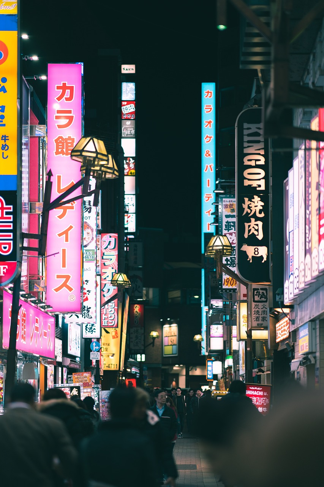
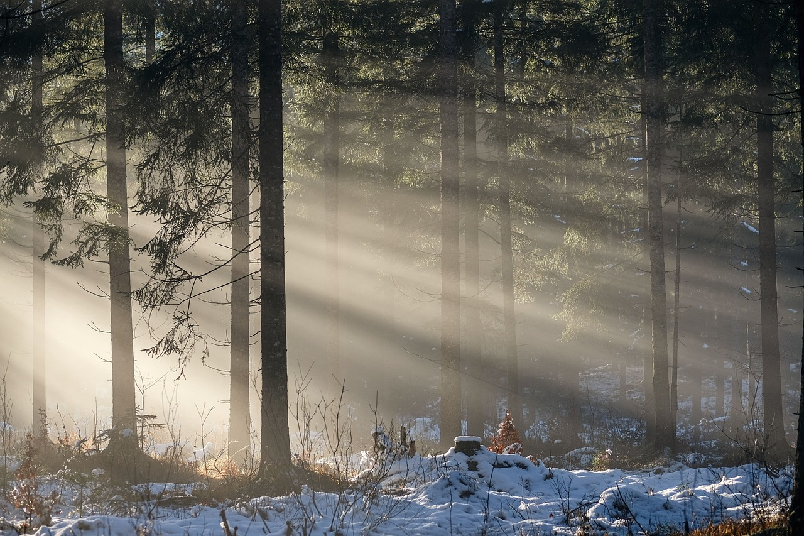
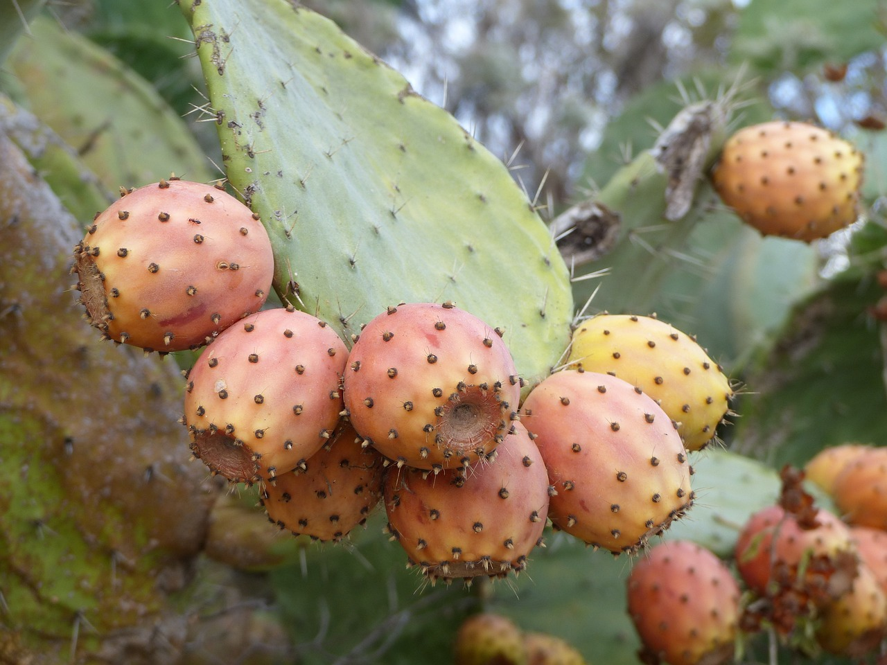
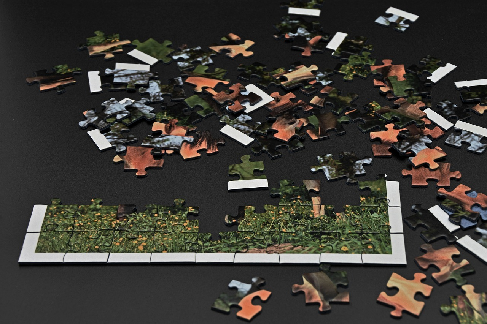
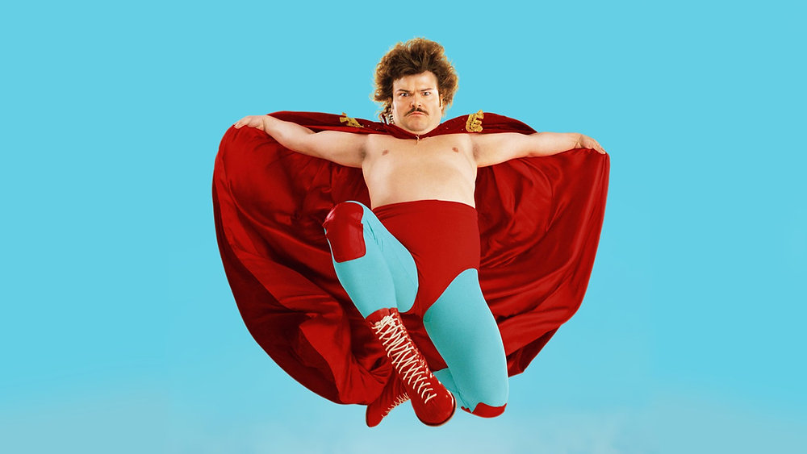
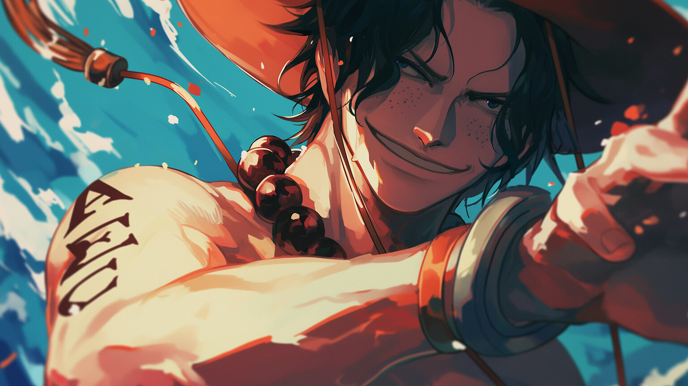

Flor Favorita

Tu sonrisa ilumina mi día
Lugar Favorito

Tu sueño siempre a sido japon y siempre que veo algo relacionado me recuerda a ti, muero por ir algun dia juntos
Estación del Año

Los colores que me recuerdan a ti y a los momentos de cafe comiendo churro, porcierto ¿vamos?
Comida Favorita

tus poderosisimas Tunas esas jamas las olvidare que te encanta
Pasatiempo

Pasatiempos muchos pero siempre e visto que te gusta armar imagenes como los rompecabezas
Personaje

Claro que tu Personaje favorito es nacho libre, ah ¿no?, cierto cierto
Personaje Real

Es ICE claro jeje solo queria que no fuera muy obvio